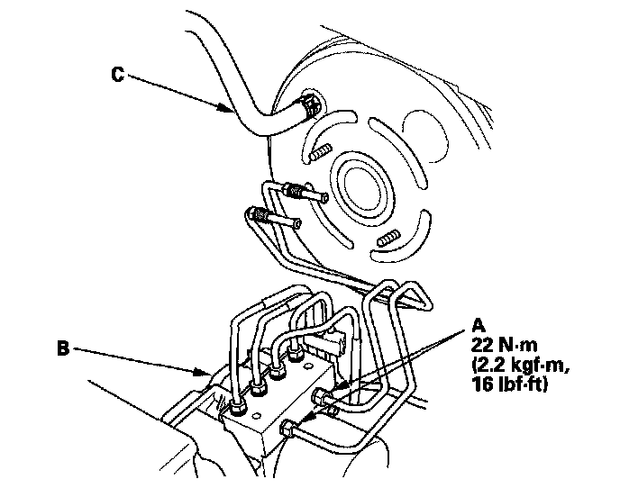
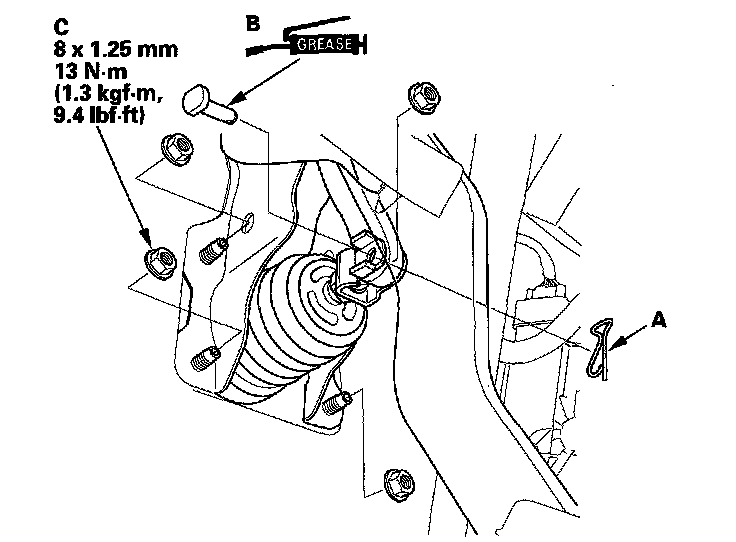
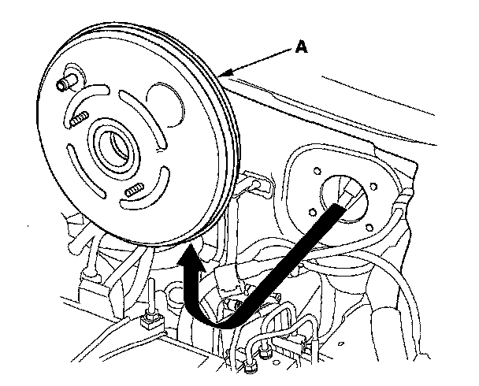

Vacuum Brake Booster: Service and Repair
Brake Booster Replacement1. Remove the air cleaner.
2. Remove the master cylinder.
3. Remove the brake lines (A) from the VSA modulator-control unit (B).

4. Disconnect the brake booster vacuum hose (C) from the brake booster.
5. Remove the driver's dashboard undercover.
6. Remove the lock pin (A) and the joint pin (B), then disconnect the yoke from the brake pedal.

7. Remove the brake booster mounting nuts (C).
8. Remove the brake booster (A) from the engine compartment.
NOTICE:
^ Be careful not to damage the booster surfaces and threads of the booster stud bolts.
^ Be careful not to bend or damage the brake lines.

9. Install the brake booster in the reverse order of removal, and note these items:
^ Adjust the pushrod clearance before installing the brake booster.
^ Install the master cylinder after installing the brake booster.
^ Check the brake pedal height and free play after installing the master cylinder, and adjust it if necessary.
^ Bleed the brake system.